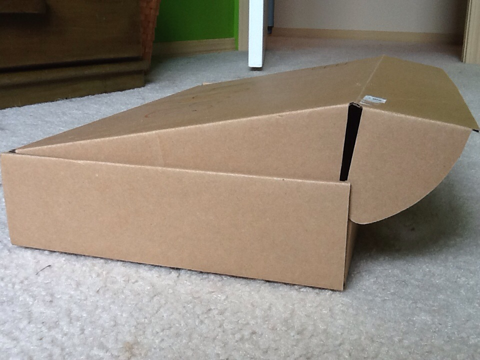
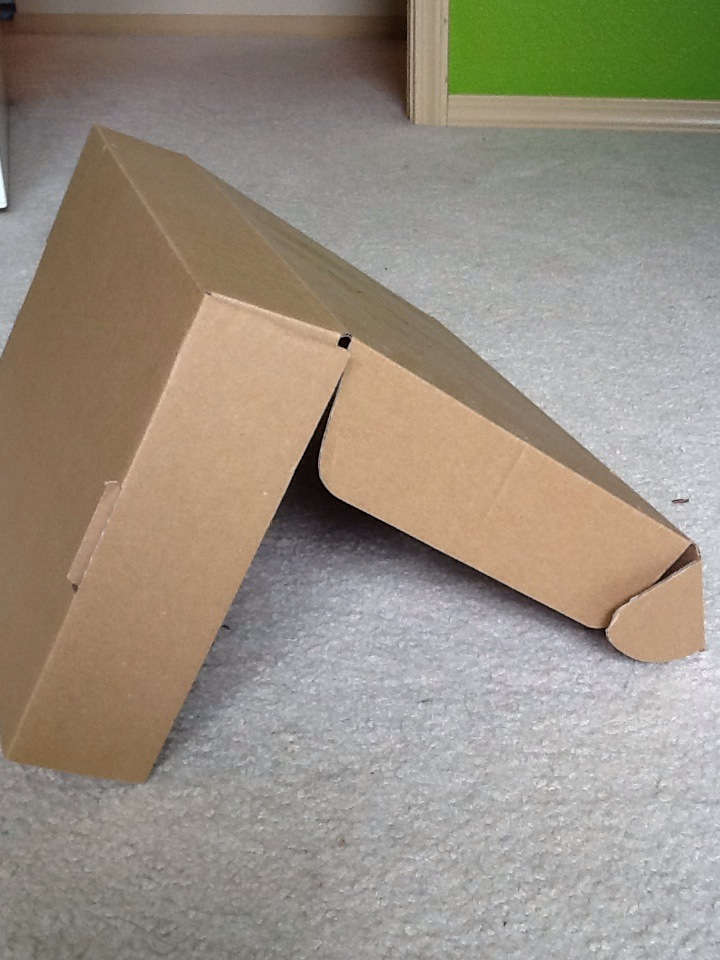
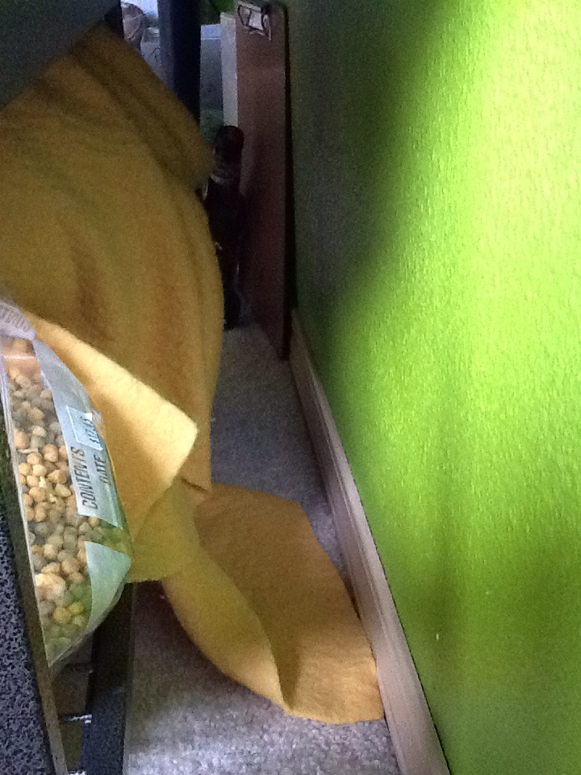
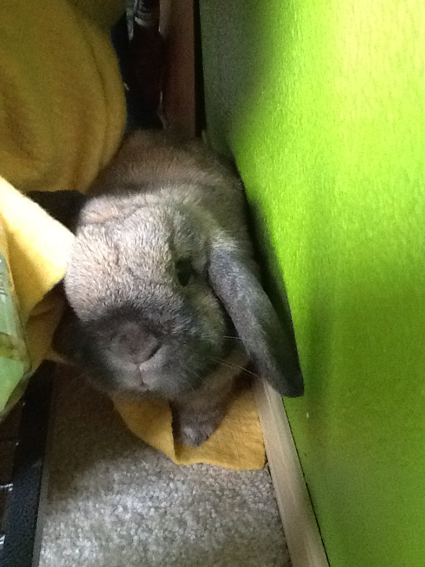

Tunnel
MATERIALS: cardboard or your house
CARDBOARD
1. Find a piece of cardboard about 2' wide by however long
you want your tunnel to be, or use a box with shallow sides and
a fold-over lid

2. Fold the cardboard in half or open the box and prop upright like
a teepee.

YOUR HOUSE
1. Another way to make a tunnel is to arrange your house
so that there are fun places for your bunny to explore.
This is often quite simple. All you need to do is move
a piece of your furniture about 6-10" (depending on your bunny
size) away from the wall. A desk or shelf often works just fine.

* If you're worried about your bunny chewing your furniture, put small toys in
the tunnel so your bun will be distracted from your furniture.
